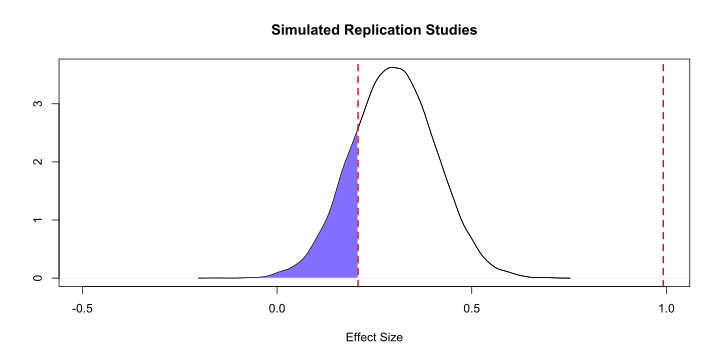

Replicating or not?
Statistical methods for replicability assessment
![]()
@psicostat
26-10-2023
Quick Background
Quick Background
These materials are part of a more extensive workshops within the summer school “Replicability Crisis in Science” organized by the Department of Statistics
During this summer school, mainly philosophers and statisticians, discussed about the replicability issues
See here for the link to the complete workshop slides
What is considered a successful or unsuccessful replication?
Some (random) concepts
Credibility of scientific claims is established with evidence for their replicability using new data (Nosek & Errington, 2020)
Replication is repeating a study’s procedure and observing whether the prior finding recurs (Jeffreys, 1973)
Replication is a study for which any outcome would be considered diagnostic evidence about a claim from prior research (Nosek & Errington, 2020).
Difficulty in drawing conclusions from replications
Replication is often intended as conditioned to the original result. The original result could be a false positive or a biased result. Also the replication attempt could be a false positive or a false negative (Nosek & Errington, 2020).
To be a replication, two things must be true. Outcomes consistent with a prior claim would increase confidence in the claim, and outcomes inconsistent with a prior claim would decrease confidence in the claim (Nosek & Errington, 2020).
Exact and Conceptual replications
Exact replications are commonly considered as the gold-standard but in practice (especially in Social Sciences, Psychology, etc.) are rare.
Let’s imagine, an original study \(y_{or}\) finding a result.
- Replication \(y_{rep}\) with the exact same method find the same result. Replication or not?
- Replication \(y_{rep}\) with a similar method find the same result. Replication or not?
- Replication \(y_{rep}\) with similar method did not find the same result. Replication or not?
Direct and Conceptual replications (Schmidt, 2009)
A direct replication is defined as the repetition of an experimental procedure.
A conceptual replication is defined as testing the same hypothesis with different methods.
Exact replications are (often) impossible (Schmidt, 2009)
Let’s imagine an extreme example: testing the physiological reaction to arousing situation:
- The original study: Experiment with prehistoric reacting to an arousing stimulus
- The actual replication: It is possible to create the exact situation? Some phenomenon changes overtime, especially people-related phenomenon
Exact replication is often not feasible. Even using the same experimental setup (direct replication) does not assure that we are studying the same phenomenon.
As Exact as possible…
Even when an experiment use almost the same setup of the original study there is a source of unknown uncertainty. Which is the impact of a slightly change in the experimental setup on the actual result?
- A study on the human visual system: presenting stimuli on different monitors –> small change with a huge impact
- A study on consumer behavior: participant answering question using a smartphone or a computer –> small but (maybe) irrelevant change
How to evaluate the actual impact?
Overall model and notation
Overall model and notation
For the purpose of notation and simplicity we can define a meta-analytical-based replication model (Hedges & Schauer, 2019b; Schauer, 2022; Schauer & Hedges, 2021)
\[ y_i = \mu_{\theta} + \delta_i + \epsilon_i \]
\[ \delta_i \sim \mathcal{N}(0, \tau^2) \]
\[ \epsilon_i \sim \mathcal{N}(0, \sigma^2_i) \]
- \(i = 1\) is the original study. \(i = 2\) is a single replication and \(i = 2, 3, ..., k\) is a series of replications
- \(\tau^2\) is the variance among replications
- \(\theta_i = \mu_{\theta} + \delta_i\) is the real effect for the study \(i\)
- \(\sigma^2_i\) is the precision \(1/\sigma^2_i\) of the study \(i\)
Overall model and notation
For the examples we are going to simulate (unstandardized) effect sizes as the difference between two independent groups:
\[ \Delta = \overline{X_1} - \overline{X_2} \]
\[ SE_{\Delta} = \sqrt{\frac{s^2_1}{n_1} + \frac{s^2_2}{n_2}} \]
With \(X_{1_j} \sim \mathcal{N}(0, 1)\) and \(X_{2_j} \sim \mathcal{N}(\Delta, 1)\)
Overall model and notation
Thus our observed effect sizes \(y_i\) is sampled from: \[ y_i \sim \mathcal{N}(\mu_\theta, \tau^2 + \frac{1}{n_1} + \frac{1}{n_2}) \]
Where \(\frac{1}{n_1} + \frac{1}{n_2}\) is the sampling variability (\(\sigma^2_i\)).
The sampling variances are sampled from:
\[ \sigma_i^2 \sim \frac{\chi^2_{n_1 + n_2 - 2}}{n_1 + n_2 - 2} (\frac{1}{n_1} + \frac{1}{n_2}) \]
Overall model and notation
Everything is implemented into the sim_studies() function:
yi vi sei
1 0.4011055 0.05773791 0.2402871
2 0.2286081 0.06718975 0.2592099
3 0.1897863 0.04565810 0.2136776
4 -0.5492924 0.06268957 0.2503789
5 0.6674382 0.06922163 0.2631000
6 0.8155424 0.08885042 0.2980779
7 0.9102745 0.04744699 0.2178233
8 0.4397352 0.07270555 0.2696397
9 0.5865701 0.07740955 0.2782257
10 -0.4344845 0.06318953 0.2513753
Exact vs Approximate replication
This distinction (see Brandt et al., 2014 for a different terminology) refers to parameters \(\theta_i\). With exact we are considering a case where:
\[ \theta_1 = \theta_2 = \theta_3, \dots, \theta_k \]
Thus the true parameters of \(k\) replication studies are the same. Thus the variability among true effects \(\tau^2 = 0\).
Similarly, due to (often not controllable) differences among experiments (i.e., lab, location, sample, etc.) we could expect a certain degree of variability \(\tau^2\). In other terms \(\tau^2 < \tau^2_0\) where \(\tau^2_0\) is the maximum variability (that need to be defined). In this way studies are replicating:
\[ \theta_i \sim \mathcal{N}(\mu_\theta, \tau^2_0) \]
Types of agreement
Coarsely, we can define a replication success when two or more studies obtain the “same” result. The definition of sameness it is crucial:
- same sign or direction: two studies (original and replication) evaluating the efficacy of a treatment have a positive effect \(sign(\theta_1) = sign(\theta_2)\) where \(sign\) is the sign function.
- same magnitude: two studies (original and replication) evaluating the efficacy of a treatment have the same effect in terms \(|\theta_1 - \theta_2| = 0\) or similar up to a tolerance factor \(|\theta_1 - \theta_2| < \gamma\) where \(\gamma\) is the maximum difference considered as null.
The big picture

Frequentists Methods
Vote Counting based on significance or direction
The simplest method is called vote counting (Hedges & Olkin, 1980; Valentine et al., 2011). A replication attempt \(\theta_{rep}\) is considered successful if the result has the same direction of the original study \(\theta_{orig}\) and it is statistically significant i.e., \(p_{\theta_{rep}} \leq \alpha\). Similarly we can count the number of replication with the same sign as the original study.
- Easy to understand, communicate and compute
- Did not consider the size of the effect
- Depends on the power of \(\theta_{rep}\)
Vote Counting, extreme example
Let’s imagine an original experiment with \(n_{orig} = 30\) and \(\hat \theta_{orig} = 0.5\) that is statistically significant \(p \approx 0.045\). Now a direct replication (thus assuming \(\tau^2 = 0\)) study with \(n_{rep} = 350\) found \(\hat \theta_{rep_1} = 0.15\), that is statistically significant \(p\approx 0.047\).
Confidence Interval, replication within original
Another approach check if the replication attempt \(\theta_{rep}\) is contained in the % confidence interval of the original study \(\theta_{orig}\). Formally:
\[ \theta_{orig} - \Phi(\alpha/2) \sqrt{\sigma^2_{orig}} < \theta_{rep} < \theta_{orig} + \Phi(\alpha/2) \sqrt{\sigma^2_{orig}} \]
Where \(\Phi\) is the cumulative standard normal distribution, \(\alpha\) is the type-1 error rate.
- Take into account the size of the effect and the precision of \(\theta_{orig}\)
- The original study is assumed to be a reliable estimation
- No extension for many-to-one designs
- Low precise original studies lead to higher success rate
Confidence Interval, replication within original
One potential problem of this method regards that low precise original studies are “easier” to replicate due to larger confidence intervals.
Mathur & VanderWeele (2020) \(p_{orig}\)
Mathur & VanderWeele (2020) proposed a new method based on the prediction interval to calculate a p value \(p_{orig}\) representing the probability that \(\theta_{orig}\) is consistent with the replications. This method is suited for many-to-one replication designs. Formally:
\[ P_{orig} = 2 \left[ 1 - \Phi \left( \frac{|\hat \theta_{orig} - \hat \mu_{\theta_{rep}}|}{\sqrt{\hat \tau^2 + \sigma^2_{orig} + \hat{SE}^2_{\hat \mu_{\theta_{rep}}}}} \right) \right] \]
- \(\mu_{\theta_{rep}}\) is the pooled (i.e., meta-analytic) estimation of the \(k\) replications
- \(\tau^2\) is the variance among replications
It is interpreted as the probability that \(\theta_{orig}\) is equal or more extreme that what observed. A very low \(p_{orig}\) suggest that the original study is inconsistent with replications.
- Suited for many-to-one designs
- We take into account all sources of uncertainty
- We have a p-value
Combining original and replications
Another approach is to combine the original and replication results (both one-to-one and many-to-one) using a meta-analysis model. Then we can test if the pooled estimate is different from 0 or another meaningful value.
- Use all the available information, especially when fitting a random-effects model
- Take into account the precision by inverse-variance weighting
- Did not consider the publication bias
- For one-to-one designs only an equal-effects model can be used
dat <- sim_studies(k = 10, theta = 0.5, tau2 = 0.1, n0 = 30, n1 = 30)
# fixed-effects
fit_fixed <- rma(yi, vi, method = "EE", data = dat)
summary(fit_fixed)
Equal-Effects Model (k = 10)
logLik deviance AIC BIC AICc
-6.3749 21.5157 14.7499 15.0525 15.2499
I^2 (total heterogeneity / total variability): 58.17%
H^2 (total variability / sampling variability): 2.39
Test for Heterogeneity:
Q(df = 9) = 21.5157, p-val = 0.0105
Model Results:
estimate se zval pval ci.lb ci.ub
0.4392 0.0805 5.4563 <.0001 0.2814 0.5970 ***
---
Signif. codes: 0 '***' 0.001 '**' 0.01 '*' 0.05 '.' 0.1 ' ' 1
dat <- sim_studies(k = 10, theta = 0.5, tau2 = 0.1, n0 = 30, n1 = 30)
# random-effects
fit_random <- rma(yi, vi, method = "REML", data = dat)
summary(fit_random)
Random-Effects Model (k = 10; tau^2 estimator: REML)
logLik deviance AIC BIC AICc
-5.4830 10.9659 14.9659 15.3604 16.9659
tau^2 (estimated amount of total heterogeneity): 0.1301 (SE = 0.0916)
tau (square root of estimated tau^2 value): 0.3607
I^2 (total heterogeneity / total variability): 67.20%
H^2 (total variability / sampling variability): 3.05
Test for Heterogeneity:
Q(df = 9) = 27.1589, p-val = 0.0013
Model Results:
estimate se zval pval ci.lb ci.ub
0.5800 0.1395 4.1588 <.0001 0.3067 0.8533 ***
---
Signif. codes: 0 '***' 0.001 '**' 0.01 '*' 0.05 '.' 0.1 ' ' 1
The previous approach can be also implemented combining replications into a single effect and then compare the original with the combined replication study.
This is similar to using the CI or PI approaches but the replication effect will probably by very precise due to pooling multiple studies.
The Q Statistics1
The Q statistics is used to make statistical inference on the heterogeneity (\(\tau^2\)) for meta-analysis. Can be considered as a weighted sum of squares:
\[ Q = \sum^k_{i = 1}w_i(y_i - \hat \mu)^2 \]
Where \(\hat \mu\) is EE estimation (regardless if \(\tau^2 \neq 0\)) and \(w_i\) are the inverse-variance weights. Note that in the case of \(w_1 = w_2 ... = w_i\), Q is just a standard sum of squares (or deviance).
The Q Statistics
Given that we are summing up squared distances, they should be approximately \(\chi^2\) with \(df = k - 1\). In case of no heterogeneity (\(\tau^2 = 0\)) the observed variability is caused by sampling error only. The expected value of the \(\chi^2\) is just the degrees of freedom (\(df = k - 1\)).
In case of \(\tau^2 \neq 0\), the expected value is \(k - 1 + \lambda\) where \(\lambda\) is a non-centrality parameter.
In other terms, if the expected value of \(Q\) exceed the expected value assuming no heterogeneity, we have evidence that \(\tau^2 \neq 0\).
The Q Statistics
Let’s try a more practical approach. We simulate a lot of meta-analysis with and without heterogeneity and we check the Q statistics.
Code
get_Q <- function(yi, vi){
wi <- 1/vi
theta_ee <- weighted.mean(yi, wi)
sum(wi*(yi - theta_ee)^2)
}
k <- 30
n <- 30
tau2 <- 0.1
nsim <- 1e4
Qs_tau2_0 <- rep(0, nsim)
Qs_tau2 <- rep(0, nsim)
res2_tau2_0 <- vector("list", nsim)
res2_tau2 <- vector("list", nsim)
for(i in 1:nsim){
dat_tau2_0 <- sim_studies(k = 30, theta = 0.5, tau2 = 0, n0 = n, n1 = n)
dat_tau2 <- sim_studies(k = 30, theta = 0.5, tau2 = tau2, n0 = n, n1 = n)
theta_ee_tau2_0 <- weighted.mean(dat_tau2_0$yi, 1/dat_tau2_0$vi)
theta_ee <- weighted.mean(dat_tau2$yi, 1/dat_tau2$vi)
res2_tau2_0[[i]] <- dat_tau2_0$yi - theta_ee_tau2_0
res2_tau2[[i]] <- dat_tau2$yi - theta_ee
Qs_tau2_0[i] <- get_Q(dat_tau2_0$yi, dat_tau2_0$vi)
Qs_tau2[i] <- get_Q(dat_tau2$yi, dat_tau2$vi)
}
df <- k - 1
par(mfrow = c(2,2))
hist(Qs_tau2_0, probability = TRUE, ylim = c(0, 0.08), xlim = c(0, 150),
xlab = "Q",
main = latex2exp::TeX("$\\tau^2 = 0$"))
curve(dchisq(x, df), 0, 100, add = TRUE, col = "firebrick", lwd = 2)
hist(unlist(res2_tau2_0), probability = TRUE, main = latex2exp::TeX("$\\tau^2 = 0$"), ylim = c(0, 2),
xlab = latex2exp::TeX("$y_i - \\hat{\\mu}$"))
curve(dnorm(x, 0, sqrt(1/n + 1/n)), add = TRUE, col = "dodgerblue", lwd = 2)
hist(Qs_tau2, probability = TRUE, ylim = c(0, 0.08), xlim = c(0, 150),
xlab = "Q",
main = latex2exp::TeX("$\\tau^2 = 0.1$"))
curve(dchisq(x, df), 0, 100, add = TRUE, col = "firebrick", lwd = 2)
hist(unlist(res2_tau2), probability = TRUE, main = latex2exp::TeX("$\\tau^2 = 0.1$"), ylim = c(0, 2),
xlab = latex2exp::TeX("$y_i - \\hat{\\mu}$"))
curve(dnorm(x, 0, sqrt(1/n + 1/n)), add = TRUE, col = "dodgerblue", lwd = 2)Q Statistics
- In case of exact replication we expect \(\lambda = 0\) because the original study and replication(s) are consistent
- In case of approximate replication we could choose a \(\lambda_0\) considered a non-zero variability still considered as zero (similar to equivalence testing) and see if the estimated \(\lambda\) is greater.
- Hedges & Schauer (2019b) provide different strategies to choose \(\lambda_0\) according to published literature.
Q Statistics
In the case of evaluating an exact replication we can use the Qrep() function that simply calculate the p-value based on the Q sampling distribution.
Qrep <- function(yi, vi, lambda0 = 0, alpha = 0.05){
fit <- metafor::rma(yi, vi)
k <- fit$k
Q <- fit$QE
df <- k - 1
Qp <- pchisq(Q, df = df, ncp = lambda0, lower.tail = FALSE)
pval <- ifelse(Qp < 0.001, "p < 0.001", sprintf("p = %.3f", Qp))
lambda <- ifelse((Q - df) < 0, 0, (Q - df))
res <- list(Q = Q, lambda = lambda, pval = Qp, df = df, k = k, alpha = alpha, lambda0 = lambda0)
H0 <- ifelse(lambda0 != 0, paste("H0: lambda <", lambda0), "H0: lambda = 0")
title <- ifelse(lambda0 != 0, "Q test for Approximate Replication", "Q test for Exact Replication")
cli::cli_rule()
cat(cli::col_blue(cli::style_bold(title)), "\n\n")
cat(sprintf("Q = %.3f (df = %s), lambda = %.3f, %s", res$Q, res$df, lambda, pval), "\n")
cat(H0, "\n")
cli::cli_rule()
class(res) <- "Qrep"
invisible(res)
}Small Telescopes (Simonsohn, 2015)
The idea is simple but quite powerful and insightful. Let’s assume that an original study found an effect of \(y_{orig} = 0.7\) on a two-sample design with \(n = 20\) per group.
- we define a threshold as the effect size that is associated with a certain low power level e.g., \(33\%\) given the sample size i.e. \(\theta_{small} = 0.5\)
- the replication study found an effect of \(y_{rep} = 0.2\) with \(n = 100\) subjects
If the \(y_{rep}\) is lower (i.e., the upper bound of the confidence interval) than the small effect (\(\theta_{small} = 0.5\)) we conclude that the effect is probably so low that could not have been detected by the original study. Thus there is no evidence for a replication.
Small Telescopes (Simonsohn, 2015)
We can use the custom small_telescope() function on simulated data:
small_telescope <- function(or_d,
or_se,
rep_d,
rep_se,
small,
ci = 0.95){
# quantile for the ci
qs <- c((1 - ci)/2, 1 - (1 - ci)/2)
# original confidence interval
or_ci <- or_d + qnorm(qs) * or_se
# replication confidence interval
rep_ci <- rep_d + qnorm(qs) * rep_se
# small power
is_replicated <- rep_ci[2] > small
msg_original <- sprintf("Original Study: d = %.3f %s CI = [%.3f, %.3f]",
or_d, ci, or_ci[1], or_ci[2])
msg_replicated <- sprintf("Replication Study: d = %.3f %s CI = [%.3f, %.3f]",
rep_d, ci, rep_ci[1], rep_ci[2])
if(is_replicated){
msg_res <- sprintf("The replicated effect is not smaller than the small effect (%.3f), (probably) replication!", small)
msg_res <- cli::col_green(msg_res)
}else{
msg_res <- sprintf("The replicated effect is smaller than the small effect (%.3f), no replication!", small)
msg_res <- cli::col_red(msg_res)
}
out <- data.frame(id = c("original", "replication"),
d = c(or_d, rep_d),
lower = c(or_ci[1], rep_ci[1]),
upper = c(or_ci[2], rep_ci[2]),
small = small
)
# nice message
cat(
msg_original,
msg_replicated,
cli::rule(),
msg_res,
sep = "\n"
)
invisible(out)
}Small Telescopes (Simonsohn, 2015)
set.seed(2025)
d <- 0.2 # real effect
# original study
or_n <- 20
or_d <- 0.7
or_se <- sqrt(1/20 + 1/20)
d_small <- pwr::pwr.t.test(or_n, power = 0.33)$d
# replication
rep_n <- 100 # sample size of replication study
g0 <- rnorm(rep_n, 0, 1)
g1 <- rnorm(rep_n, d, 1)
rep_d <- mean(g1) - mean(g0)
rep_se <- sqrt(var(g1)/rep_n + var(g0)/rep_n)Here we are using the pwr::pwr.t.test() to compute the effect size \(\theta_{small}\) (in code d) associated with 33% power.
Small Telescopes (Simonsohn, 2015)
Original Study: d = 0.700 0.95 CI = [0.080, 1.320]
Replication Study: d = 0.214 0.95 CI = [-0.061, 0.490]
────────────────────────────────────────────────────────────────────────────────
The replicated effect is smaller than the small effect (0.493), no replication!
And a (quite over-killed) plot:
Bayesian Methods
Bayes Factor
Verhagen & Wagenmakers (2014) proposed a method to estimate the evidence of a replication study. The core topics to understand the method are:
- Bayesian hypothesis testing using the Bayes Factor (see, Rouder et al., 2009)
- Bayes Factor using the Savage-Dickey density ratio (SDR, Wagenmakers et al., 2010)
Bayes Factor
The idea of the Bayes Factor is computing the evidence of the data under two competing hypotheses, \(H_0\) and \(H_1\):
\[ \frac{p(H_0|D)}{p(H_1|D)} = \frac{f(D|H_0)}{f(D|H_1)} \times \frac{p(H_0)}{p(H_1)} \]
Where \(f\) is the likelihood function, \(y\) are the data. The \(\frac{p(H_0)}{p(H_1)}\) is the prior odds of the two hypothesis. The Bayes Factor is the ratio between the likelihood of the data under the two hypotheses.
Bayes Factor using the SDR
Calculating the BF can be problematic in some condition. The SDR is a convenient shortcut to calculate the Bayes Factor (Wagenmakers et al., 2010). The idea is that the ratio between the prior and posterior density distribution for the \(H_1\) is an estimate of the Bayes factor calculated in the standard way.
\[ BF_{01} = \frac{p(D|H_0)}{p(D|H_1)} = \frac{p(\theta = x|D, H_1)}{p(\theta = x, H_1)} \]
Where \(\theta\) is the parameter of interest and \(x\) is the null value under \(H_0\) e.g., 0. and \(D\) are the data.
Bayes Factor using the SDR, Example:
We want to test the fairness of a coin thus \(H_0: \theta = 0.5\). Under \(H_1\) we use a completely uninformative prior by setting \(\theta \sim Beta(1, 1)\).
We flip the coin 20 times and we found that \(\hat \theta = 0.75\).
Bayes Factor using the SDR, Example:
The ratio between the two black dots is the Bayes Factor.
Verhagen & Wagenmakers (2014) model1
The idea is using the posterior distribution of the original study as prior for a Bayesian hypothesis testing where:
- \(H_0: \theta_{rep} = 0\) thus there is no effect in the replication study
- \(H_1: \theta_{rep} \neq 0\) and in particular is distributed as \(\delta \sim \mathcal{N}(\theta_{orig}, \sigma^2_{orig})\) where \(\theta_{orig}\) and \(\sigma^2_{orig}\) are the mean and standard error of the original study
If \(H_0\) is more likely after collecting data, there is evidence against the replication \(BF_{r0} > 1\) otherwise there is evidence for a successful replication \(BF_{r1} > 1\).
Example
Let’s assume that the original study (\(n = 30\)) estimate a \(y_{orig} = 0.4\) and a standard error of \(\sigma^2/n\).
Note
The assumption of Verhagen & Wagenmakers (2014) is that the original study performed a Bayesian analysis with a completely flat prior. Thus the confidence interval is the same as the Bayesian credible interval.
Example
For this reason, the posterior distribution of the original study can be approximated as:
Example
Let’s imagine that a new study tried to replicate the original one. They collected \(n = 100\) participants with the same protocol and found and effect of \(y_{rep} = 0.1\).
Example
- the prior is the posterior of the original study
- the posterior is calculated combining the original study with the replication study
Conclusions
Conclusions
- There is no a unique definition of replication, but there are several theoretical and philosophical perspectives
- There is no a unique method to quantitatively assess the success of a replication study/studies
- The majority of replication studies (e.g., multilab) post-hoc use several methods
- Not all methods as been extensively assessed in terms of power, type-1 error, etc.
- Replication studies usually do not plan the experiment(s) according to the replication test
Underpowered replication studies
Hedges & Schauer (2019a) and Schauer & Hedges (2020) noticed that especially single replication studies are often underpowered.
Suppose having an original study with an effect size of \(\theta_{orig}=0.6\) with \(n = 50\). Then we plan a replication study with an effect size that is 50% of the original study \(\theta_{orig}=0.3\) and we estimate to have 80% power with \(n = 175\). Using the Confidence Interval criterion we are undepowered to detect the replication success.
